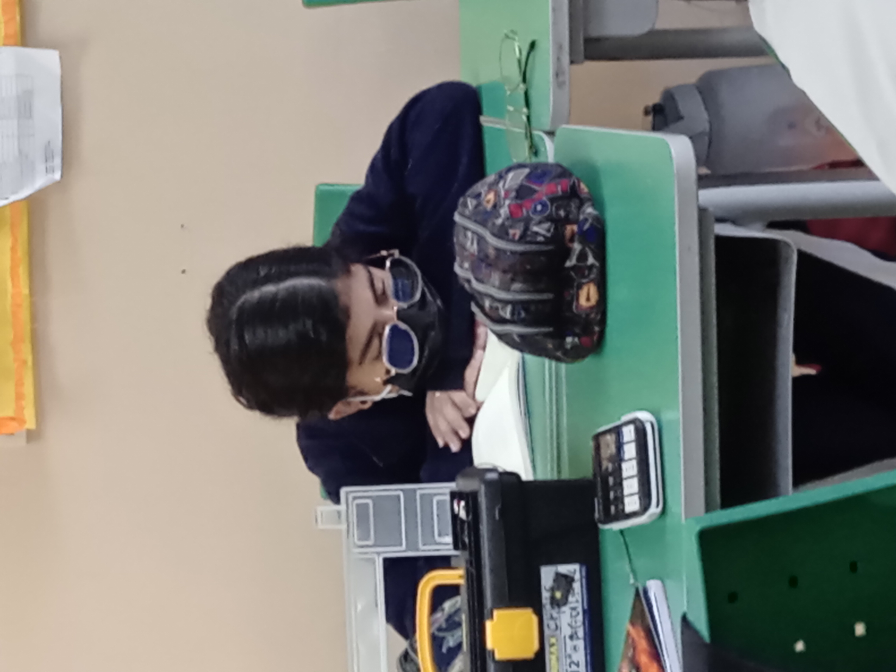
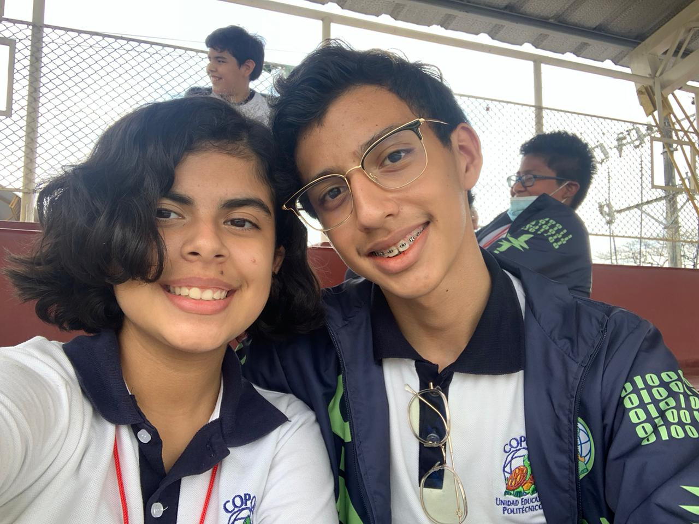
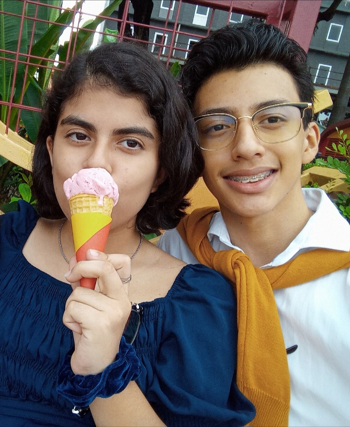
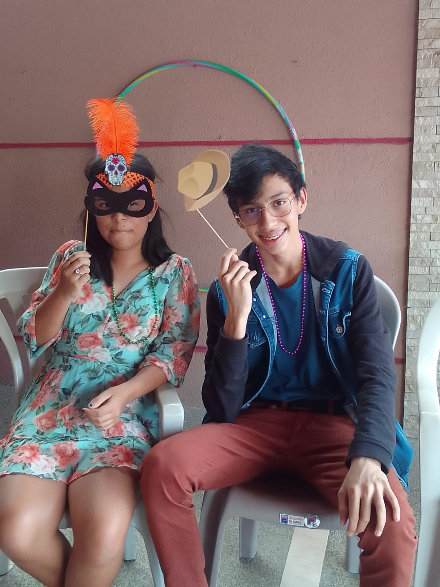
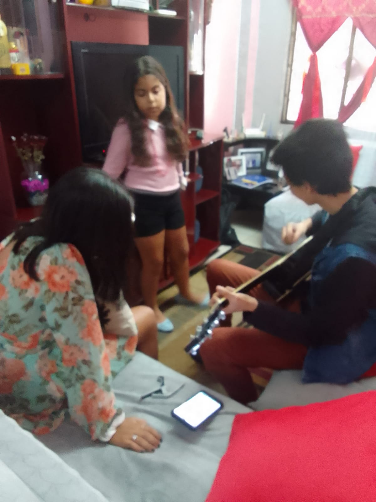
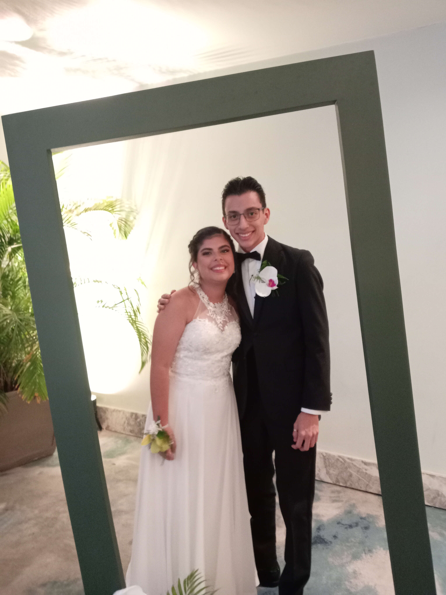
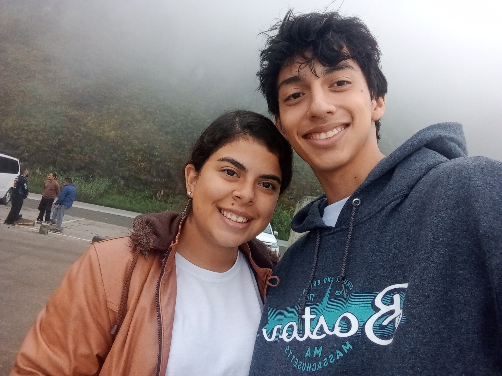
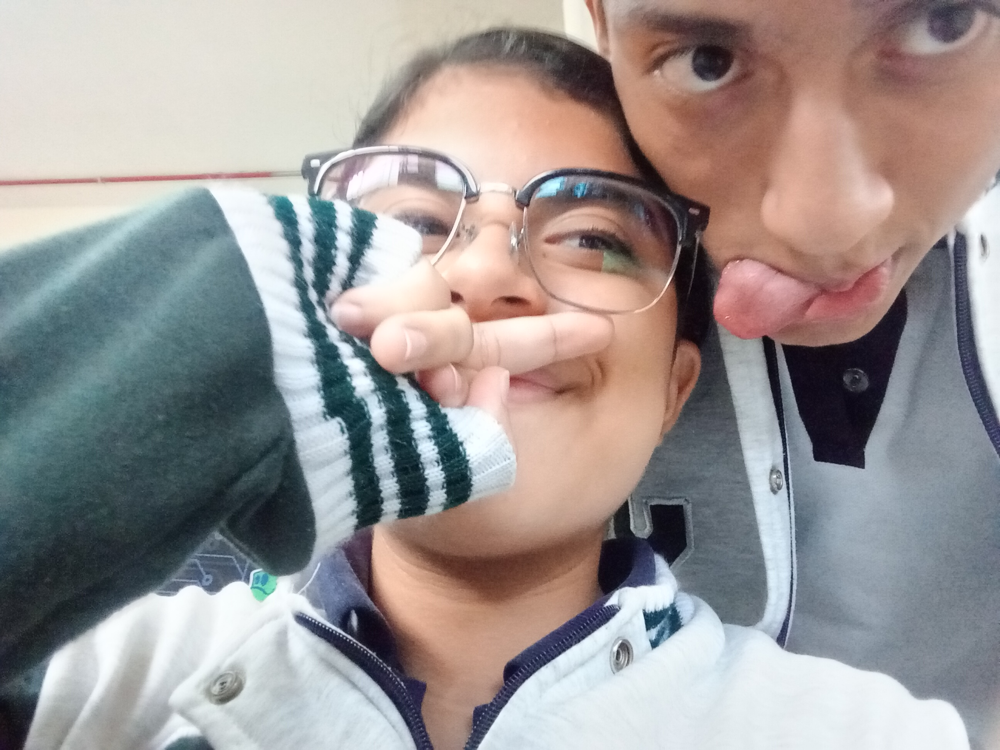
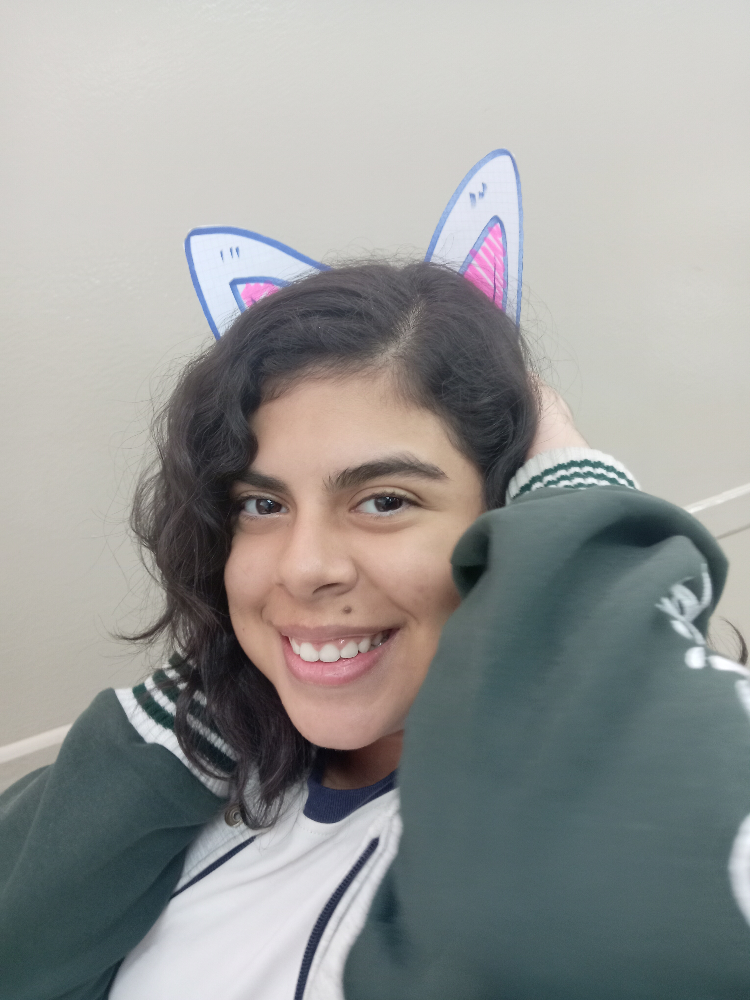
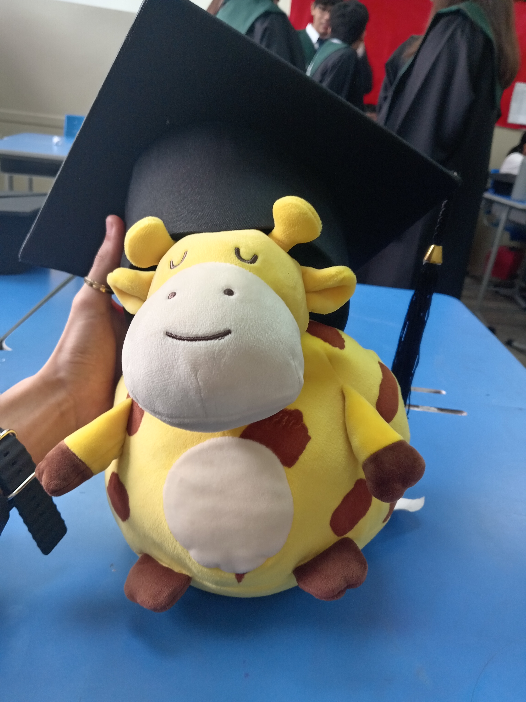

el comienzo
La primera conversación
Una tarea de matemáticas durante la pandemia. Una cosa pequeña que terminó cambiando muchísimo.
guardando nuestros recuerdos...

para mi Sukka ♡
29 · 08 · 2019 — 29 · 08 · 2026
Una historia que empezó en un colegio, siguió con una tarea de matemáticas y terminó convirtiéndose en mi lugar favorito.
ven, te quiero contar algo ↓Nos conocimos en una obra teatral en el colegio. Y aunque ese día todavía no sabíamos lo que vendría, hoy me gusta pensar que nuestra historia ya había dado su primer pasito.
La verdad es que comenzamos a hablar durante la pandemia, cuando me pediste una tarea de matemáticas.
Una tarea de matemáticas... quién diría. ♡
desde aquel día
Hay recuerdos que sucedieron en años distintos, pero todos terminaron formando la misma historia.

Una tarea de matemáticas durante la pandemia. Una cosa pequeña que terminó cambiando muchísimo.
El momento en que les pedí que fueras mi novia. Nervios, ilusión y esa sensación de estar dando un paso importante.


Fui a tu casa para prepararte una fiesta sorpresa. Uno de esos días que se quedaron guardados para siempre.
Porque a veces las palabras normales no alcanzan y uno intenta convertir lo que siente en música.


El final de una etapa en el mismo lugar donde nos conocimos. Se acababa el colegio, pero no nosotros.
Cuenca, recuerdos nuevos y un anillo de promesa. Algún día quiero cambiarlo por uno de matrimonio.

nuestros días
Las fotos aparecen mezcladas, como los recuerdos cuando uno piensa en alguien que ama.
cosas que solo nosotros entendemos
Hasta lo que decimos. Si uno lo dice, el otro probablemente lo repite. XD
Por intentar recoger una moneda terminaste cayéndote en medio de El Dorado y me diste una patada en la cara. Todavía me río. 😭
Los archivos borrados a último minuto. Yo hablando con Google como si pudiera convencerlos personalmente.
Tú, yo, tu papá y sus amigos. Y sí: quedó rica.
Películas, salidas a comer y esos días aparentemente normales que terminaron siendo mis favoritos.
Pequeña, sencilla y muchísimo más importante de lo que parecía.
No tomamos ni una foto. Y eso también está bien. Hay recuerdos que existen sin una cámara.

también nosotros
Nuestra primera ruptura fue un momento en el que los dos sentimos que habíamos tirado la toalla.
Pero después volvimos a ser amigos. Recuperamos la relación, poco a poco, hasta volver a ser novios.
Y quizá una de las cosas más bonitas de nuestra historia es precisamente esa: que incluso cuando nos perdimos, encontramos el camino de vuelta.
Elegirnos otra vez también fue amor.
la banda sonora de nosotros

nuestro próximo capítulotodavía falta muchísimo
Uno de esos sueños que todavía no hemos vivido, pero que me gusta imaginar contigo.
Quiero que algún día podamos mirar atrás y decir: “¿te acuerdas de cuando soñábamos con esto?”
abre esto cuando estés lista
29 de agosto de 2026
Scarlett,
Hoy cumplimos 7 años. Siete años desde aquel 29 de agosto de 2019, y todavía me cuesta creer cuánto puede cambiar una vida en ese tiempo.
Quiero que sepas que cada día te amo un poquito más que ayer y un poquito menos que mañana. Y que, entre todas las cosas que han cambiado durante estos años, hay algo que sigue siendo igual: quiero que estés en mi vida.
Hemos tenido momentos increíbles, momentos absurdos, momentos difíciles y momentos que jamás voy a olvidar. Hemos ido al cine, hemos salido a comer, hemos viajado, nos hemos reído de cosas que nadie más entendería y también hemos tenido que aprender a encontrarnos otra vez.
Si algo me enseñaron estos siete años es que no quiero una historia perfecta. Quiero nuestra historia. Con nuestras locuras, nuestras frases copiadas, nuestras películas, nuestros viajes y todos los capítulos que todavía faltan.
Y si algún día ese anillo de promesa de Cuenca se convierte en uno de matrimonio, quiero poder decir que todo valió la pena.
Te amo, Sukka.
Joshua
Hakka ♡

para siempre, mi Sukka
29 · 08 · 2026
Te amo un poquito más que ayer
y un poquito menos que mañana.